GPBR112 :: Lecture 15 :: EQUIPMENT FOR LAND DEVELOPMENT AND SOIL CONSERVATION - DOZERS, LEVELERS, CHISEL PLOUGH, SUB SOIL PLOUGH, BLADE HARROW, BUND FORMER LAND LEVELING

Ill effects of uneven land
1. The unevenness in land level is sometimes called surface topography. Within a field unevenness has a major effect on crop management and crop yields.
2. Unevenness in land level results in uneven water coverage. (Uneven water coverage means that more water is needed to wet up the soil for land preparation)
3. Unevenness in land level results in uneven crop stands, increased weeds and uneven maturing crops. (All of these factors result in reduced yields and reduced grain quality).
Benefits of Land leveling
1. Effective land leveling reduces the work in crop establishment and care, and increases yields.
2. Level land improves water coverage that reduces the amount of water required for land preparation, improves crop establishment and care
3. Decreases the time to complete field tasks
4. Reduces weed problems
5. Results in uniform crop maturity
Principles of land leveling
Leveling of land requires soil to be shifted from the high points of the field to the low points in the most cost-effective way.
PROCEDURE IN LAND LEVELING
- plough the field twice
- Measure the levelness of the field by conducting a topographic survey.
- draw a topographic map of the field
- mark the high and low areas in the field
- move soil from the high areas to the low areas in the most cost-effective manner
- repair levees
a) Plough the field
Plough from the center of the field outward in lands. If the field is wide it may be more efficient to plough a number of lands and cut out furrows in each field. Finish with a cut out furrow around the edge of the field beside the bund. This will help keep the bunds in good shape, reduce the bund area and also act as drainage lines for the field most fields will need to be ploughed twice before leveling can commence
b) Mark the high and low spots in the field
Using either standing water in the field or height measurements from a topographic survey, mark the high and low areas in the field and form a strategy to most efficiently and effectively move soil from the high to low spots.
(Note: It is difficult to move soil more than 50 meters. If the soil has to be dragged more than 50 meters it may pay to first move soil from the middle of the field to the lowest places and then from the higher places to the middle of the field.)
c) Begin leveling
Position the leveling device in the high part of the field and drag soil to the lower part of the field.
(Note. If the fields are ploughed in lands and the same leveling procedure is adopted in the second year the field should end up relatively smooth and level.)
d) Maintain or repair levee (bunds)
Repair the levees either by first ploughing soil up against the levee or manually using a hoe or shovel. This is best done after leveling. Bulldozers can level fields. levees can be manually repaired
(Note. Levees need to be maintained as any advantage of improved water management through leveling will be lost if water is able to escape through or over the levees.)
LAND LEVELING USING DRAFT ANIMALS
To level a field using a draft animal and a leveling board the following equipment are needed:
1. Animal or pair of animals (oxen, caribou)
2. Plough (moldboard)
3. Harrows or leveling board
4. Water source and Water pump (if fields are not flooded)
With water in the field, mark or note the high and low areas and form a strategy to most effectively move soil from the high to low spots. Weight will need to be added on to the harrow to move the soil. A ratio of 40kg weight/meter width of leveling board gives the best results.
LAND LEVELING USING A 4-WHEEL TRACTOR AND BACK BLADE
To level a field using a 4-wheel tractor and a back blade the following additional equipment are needed:
1. Plough (disc, moldboard or tine)
2. harrows (disc or tine)
3. Tractor blade or drag bucket
4. Surveying equipment
A field diagram should be drawn noting the level of cut and fill required in the field. With water in the field, mark or note the high and low areas and form a strategy to most effectively move soil from the high to low spots. Tractor hydraulic system will be used to lower or lift the leveling blade.
LEVELING A LAND FOR A SMALL LAWN
1. Initial preparation of land for a lawn
Making a level lawn area is simple although does require some physical effort for the initial digging. Once the area has been dug over, the rest of the procedure is straightforward and easy.
It is wise to wait several weeks before seeding a newly graded area, especially if a lot of filling has been done, because the soil will settle and may form hollows. Any hollows that form must be filled and allowed to settle again or tramped down to ensure that the area is fairly level. To hasten the soil settling, give it a thorough and deep soaking with water.
2. Preparing Area for lawn
Mark out the area where you wish to plant a lawn with brightly colored paint in a spray can. Dig over the soil within that area to loosen it. Hammer flat-topped square-headed wooden stakes at each corner of the area and 10 to 15 cm apart in the ground in each direction. Level the stakes with a carpenter's level placed on a board which is long enough to reach three stakes. Each stake should protrude from the ground by 7.5 cm to 10 cm Adjust the stakes as necessary to ensure that they are all level. Always work with the board over three stakes; left to right, right to left or diagonally. Do this until all the stakes have been made level. Add some rich soil to top dress that already in place after all stakes have been adjusted. This topsoil should be uniformly level with the tops of all stakes. Fertilize the area according to the seed producer’s instructions. Scratch the surface area with a bamboo rake or a light lawn broom and your lawn area is ready to seed.
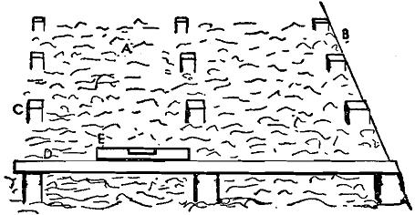
3. Seeding a lawn
Lay out a grid in the area to be seeded with strings stretched between tent pegs at the sides and the ends to form rectangles not more than 10' across. Place one or more planks on which to stand while sowing so as to avoid walking on the ground. Sow across each rectangle from side to side as an individual unit. Repeat the sowing from end to end. Rake the seed lightly into the surface with a bamboo rake or a lawn broom. Roll or lightly tramp down the whole area to firm the seed in the soil. Keep the area well watered.
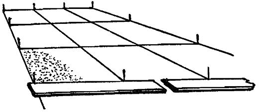
MACHINERY USED FOR LAND LEVELING
1. Leveler - tractor, power tiller and bullock drawn types are available. Heavy
duty machinery. Meant for initial cutting and filling of land
undulations
2. Precision land leveler- to provide desired grade either level or gently sloping.
8, 10, 12 13, 15 and 15 feet width of cut, 8 to 18 yards .Tractor HP
120 meant for farm use.
3. Leveler with ripper attachment - rippers loosen the soil prier to moving the soil.
4. Scrapers - tractor drawn animal drawn types available for smooth leveling.
Used after Initial leveling is completed using a leveler.
5. Scrap plane - to create table top finish
6. Drag scrapers - Precision finish and final touch up. Suitable for small areas
Weight boxes are used to add weight to increase depth of cut.
7. Box scraper - Box scrapers are used to smooth and level the ground. Rear
Wheel makes he unit a mini land-plane. Skid shoes control depth of cut. Hitching adjustment for more or less cutting force to suit job.
LAND LEVELER- TRACTOR DRAWN
Land Leveler is used for leveling the land, filling the field depressions, back fillings the pits, farmyard clearing etc. It is also called as blade terracer. It consists of a leveling board, wings for soil retaining, angle adjusting screw and three point hitch frame. Soil retaining wings are fitted on both ends of the blade for carrying the soil without spillage. It is suitable for sticky and non-sticky soils as well. Levelers are available for tractors, power tillers and bullocks.
| 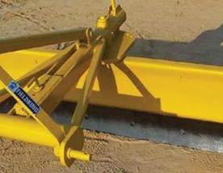 Tractor drawn land leveler |
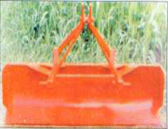 |
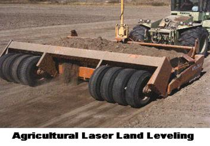 |
| 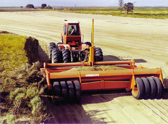 | 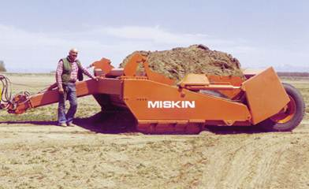 | 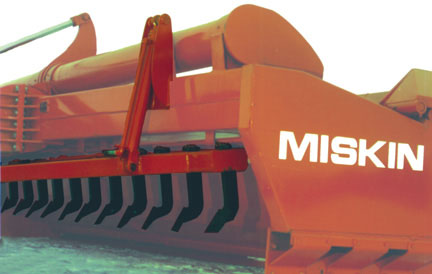 |
| Precision laser land levelers for farm use | Scraper for dirt movement- with out laser control |
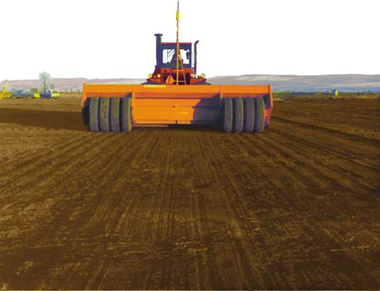
A ripper attachment loosens the ground in the outer area so that field will settle uniformly and settle evenly
Scrap plane designed for use width lasers. It creates a smooth table top finish that no other machine can do.
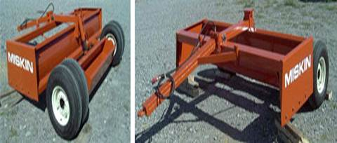
Drag scrapers are used width laser control for precision finish, touch up and limited land leveling. They work well for short haul dirt moving and for smoothing.. Weight boxes are used to add weight for increased cutting.
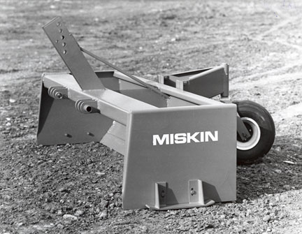
Box scraper
CHISEL PLOUGH
The chisel plough is a common tool to get deep tillage (prepared land) with limited soil disruption. The main function of this plough is to loosen and aerate the soils while leaving crop residue at the top of the soil. This plough can be used to reduce the effects of compaction and to help break up plough pan and hardpan. Unlike many other ploughs the chisel will not invert or turn the soil. This characteristic has made it a useful addition to no-till and low-till farming practices which attempt to maximise the erosion-prevention benefits of keeping organic matter and farming residues present on the soil surface through the year.
A modern John Deere 8110 Farm Tractor using a chisel plough.
The chisel plough is typically set to run up to a depth of 300 to 400 mm. However some models may run much deeper. Each of the individual ploughs, or shanks, are typically set from 230 mm to 305 mm apart. Such a plough can encounter significant soil drag, consequently a tractor of sufficient power and good traction is required. When planning to plough with a chisel plough it is important to bear in mind that 10 to 15 horsepower (7 to 11 kW) per shank will be required.
| Download this lecture as PDF here |